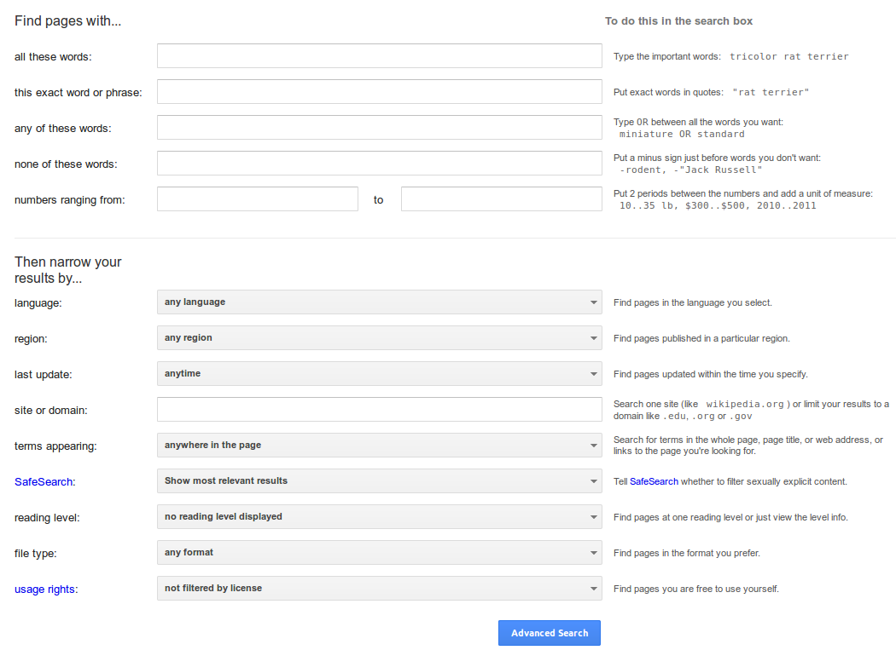
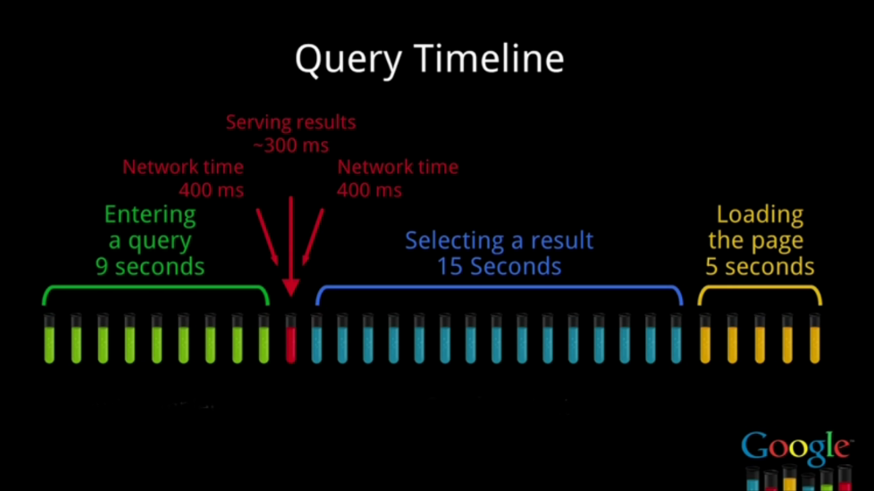
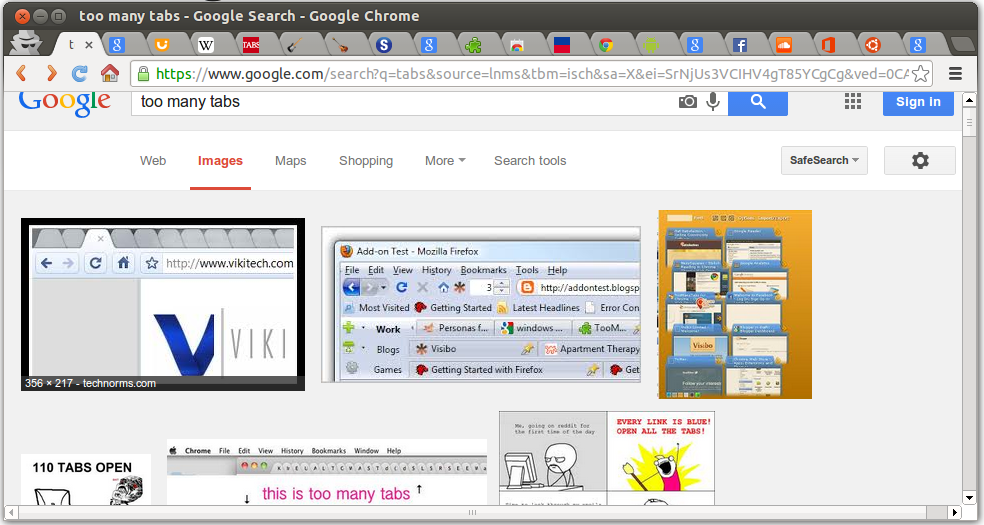
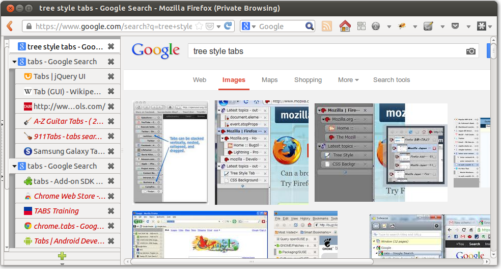
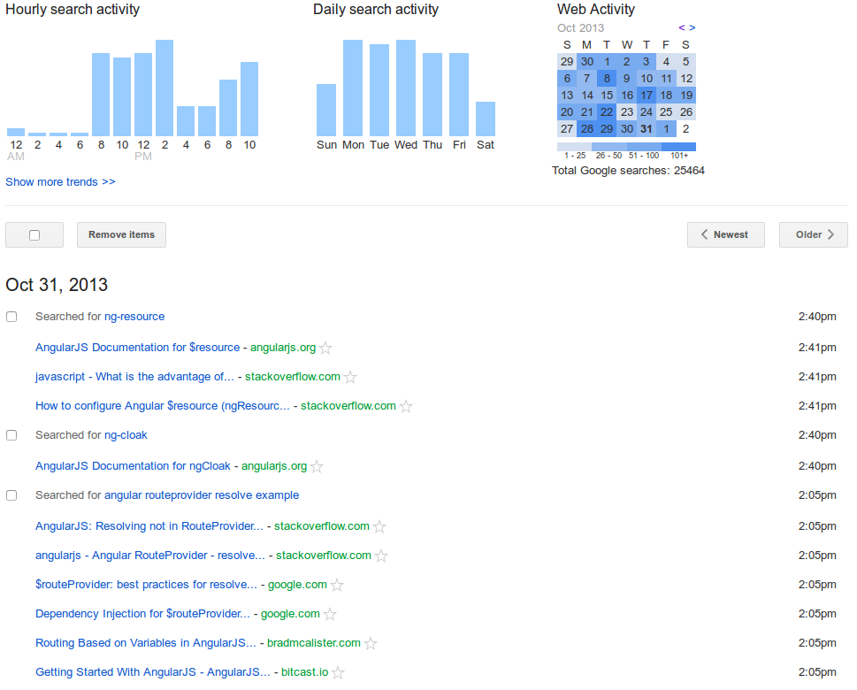

Search company
Google Inc. is an American multinational ...
gerund or present participle: googling
- search for information about (someone or something) on the Internet using the search engine Google.
"I recently googled my 7th grade teacher and found his current e-mail address"
Advanced Search

Your search - ERROR 1833 (HY000): Cannot change column 'id': used in a foreign key constraint 'FK_371009292576E0FD' of table 'foo' - did not match any documents.
Suggestions:
Never take Nothing
for an Answer

Think before you Type
Ask yourself some questions
How would other people having the same
issue ask for help on StackOverflow?
How would someone else describe this issue
when writing a blog post on the topic?
Refine the original Query
Try different combinations
Thinking about the problem from different perspectives can help YOU solve the problem by yourself!
Q&A site
Stack Overflow is a question and answer site for professional ...
Understanding the Problem
What details contribute to the problem
and in what context does it present itself?
What is the root cause of the problem you are facing?
The Fear of the Click and the Tab

Escaping the Tab Hell

Escaping the Tab Hell

Google site: Search
Google is better at search than any other site.
Including:
 Stack Overflow
Stack Overflow GitHub
GitHub- Packagist
Avoiding Impostor Syndrome
Always try to understand and learn from other peoples code you are using.
Read Think Discuss Contribute
Finding similar articles
Google related: Search
I know I read an article about that just the other day. What was the search query again that I used to find it?
Use the History

with their question rather than google it for themselves.
Give a man an answer, help him once.
Teach a man to find the answer himself,
help him for a lifetime.